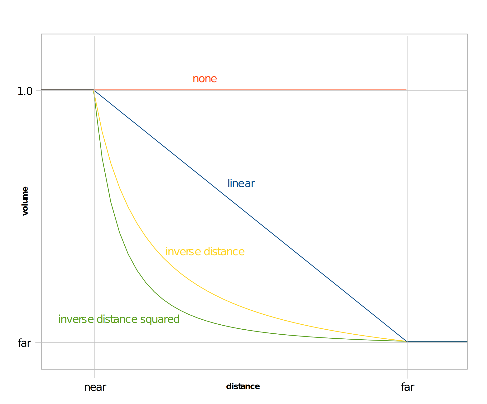

3D sound
Sounds can be assigned a position in 3D space; the sound will be panned
and its volume attenuated based on the relative positions and
orientations of the sound and the listener.
The position and orientation of the listener is specified with CkSound::set3dListenerPosition(). The arguments are the same as those used by gluLookAt():
the location of the listener, the location of a "look-at" point
directly in front of the listener, and the listener's up-vector.
The sound requires only a position. You may interpret the
position in any distance units (inches, meters, etc.), as long as you
do so consistently.
By default, 3D positioning is disabled; to enable it, call CkSound::set3dEnabled(true).
Be sure to set the positions of the sound and the listener before
enabling 3D positioning, or the volume and pan of the sound will be
momentarily incorrect.
Attenuation modes
The volume attenuation behavior of the sound with distance can be set using CkSound::set3dAttenuation().
When the distance between the sound and the listener is less than the
"near distance", the volume is not attenuated. When the distance
is greater than the "far distance", the volume is attenuated by the
"far volume". When the distance is between the near distance and
the far distance, the volume is attenuated based on the attenuation
mode, as shown in the graph:

Doppler
3D sounds can optionally have a pitch shift applied to simulate the
Doppler effect (the apparent change in pitch that occurs when an object
is moving toward or away from the listener). To enable the
Doppler effect, set the velocity of the sound and/or the listener
using CkSound::set3dVelocity() and CkSound::set3dListenerVelocity(), and set the speed of sound with CkSound::setSoundSpeed().
For the effect to sound physically plausible, you should make sure the
sound and listener velocities and the sound speed are all interpreted
using the same units (meters per second, miles per hour, etc.).
For convenience, there are predefined constants for the speed of sound in various units (CkSound::k_soundSpeed_MetersPerSecond,
etc), but you may use whatever value you like. By using a
slightly higher or lower value for the sound speed, you can make the
Doppler effect more subtle or pronounced.